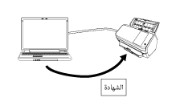

نظرة عامة
إن Network Setup Tool for fi Series هو تطبيق يتم استخدامه لتوصيل ماسحة صور من سلسلة fi Series بشبكة لإتاحة الماسحة.
يأتي Network Setup Tool for fi Series مع الأدوات التالية.
تختلف طرازات الماسحات المدعومة اعتمادًا على الأداة المُستخدمة للطراز. تحقق من اسم طراز الماسحة التي تستخدمها هو أحد أسماء طرازات الماسحات المدعومة بواسطة كل أداة مقدمًا. لمعرفة التفاصيل حول طرازات الماسحات المدعومة بواسطة كل أداة، راجع طرازات الماسحات المدعومة.
أداة تحديد الماسحة
هذه الأداة مخصصة لاختيار ماسحة ضوئية تريد استخدامها من جهاز كمبيوتر.
يمكنك تحديد ماسحة ضوئية واحدة ضمن الماسحات الضوئية المتصلة بشبكة.
عندما تحدد fi-8950، fi-8930، fi-8820، fi-8040، fi-8190، fi-8290، fi-8170، fi-8270، fi-8150، أو fi-8250، يمكنك أيضًا تنفيذ العمليات التالية.
بدء تشغيل إعدادات الشبكة في fi Series (في متصفح الويب) من نافذة [أداة تحديد الماسحة] لضبط إعدادات الماسحة
يمكنك بدء تشغيل Software Operation Panel من جهاز الكمبيوتر لتكوين إعدادات الماسحة
لمعرفة التفاصيل حول إعدادات الشبكة في fi Series (في متصفح الويب) وSoftware Operation Panel، راجع دليل المشغل 'الخاص بالماسحة.

أداة تعيين عنوان IP
هذه أداة لإعداد عنوان IP، واسم الماسحة، والمعلومات المتعلقة بالأمان، ومعلومات الشبكة الأخرى.
أداة تسجيل الشهادة
هذه أداة لتسجيل شهادة على ماسحة لتوصيل الماسحة بشبكة تتطلب شهادة عبر Wi-Fi.
بعد تسجيل شهادة على الماسحة، قم بتكوين إعدادات Wi-Fi على شاشة لمس الماسحة.
الشهادات التي يمكن تسجيلها هي كما يلي:
شهادة العميل: ملف بتنسيق PKCS#12 (*.p12، *.pfx)
شهادة CA: ملف شهادة CA (*.cer، *.crt، *.der، *.pem)

Button Event Manager
هذه أداة لتحديد تطبيق مسح ضوئي للصور ترغب في بدء تشغيله عند الضغط على زر على ماسحة ضوئية.
تحتاج إلى استخدام أداة تحديد الماسحة لتعيين ماسحة ضوئية متصلة بشبكة لتتمكّن من استخدامها على جهاز كمبيوتر.